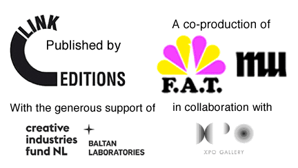

THE MANUAL
The F.A.T. Manual
The Link Art Center is proud to announce the release of The F.A.T. Manual, edited by Domenico Quaranta and F.A.T Fellow Geraldine Juárez. Published by Link Editions on the occasion of the exhibition "F.A.T. GOLD Europe" curated by Lindsay Howard at MU, Eindhoven (November 15, 2013 - January 26, 2014), the book is co-produced with F.A.T. Lab and MU.
Available during the show in a special edition of 200 printed copies, the book is already available as a free pdf download on Link Editions website, on Lulu.com and Issuu.com, and in print-on-demand on Lulu.com.
In more than five years of activity, the Free Art and Technology Lab (F.A.T. Lab) produced an impressive series of projects, all developed with open source software, shared online and documented in a way that allows everybody to copy, improve, abuse or simply use them. This approach situates F.A.T. Lab in a long tradition of DIY, processual, sharable artistic practices based on instructionals, and reveals a democratic idea of art where Fluxus scores meet hacker culture (and rap music).
Featuring texts by Régine Debatty, Evan Roth, Domenico Quaranta, Geraldine Juárez and Randy Sarafan, The F.A.T. Manual is a selection of more that 100 projects, done in the belief that printing these bits on paper will allow them to spread in a different way, infiltrate other contexts, and germinate. An archive, a catalogue, a user manual and a software handbook documenting five years of thug life, pop culture and research and development.
MU will host the official, international book launch at the opening of "F.A.T. GOLD Europe" on Friday November 15, with a presentation by the editors.
Additional information:
Edited by: Domenico Quaranta, Geraldine Juárez
Designed by: Fabio Paris
Published by: Link Editions, Brescia 2013

F.A.T Lab
F.A.T. Lab is an organization dedicated to enriching the public domain through the research and development of creative technologies and media. F.A.T. Lab's greater network of artists, engineers, scientists, lawyers, and musicians are committed to supporting open values and the public domain through the use of emerging open licenses, support for open entrepreneurship, and the admonishment of secrecy, copyright monopolies, and patents. F.A.T. Lab was co-founded in 2007 by Eyebeam senior fellows Evan Roth and James Powderly. Over the past five years, the group has grown to include twenty-five artists, designers and hacker from 3 continents.
F.A.T. Lab members are Mike Baca, Aram Bartholl, Magnus Eriksson, Michael Frumin, Geraldine Juárez, KATSU, Tobias Leingruber, Greg Leuch, Golan Levin, Zach Lieberman, LM4K, Kyle McDonald, Jonah Peretti, Christopher “moot” Poole, James Powderly, Evan Roth, Borna Sammak, Randy Sarafan, Becky Stern, Chris Sugrue, Addie Wagenknecht, Theo Watson, Jamie Wilkinson, Bennett Williamson, and Hennessy Youngman.
Link Editions
Link Editions (editions.linkartcenter.eu) is a publishing initiative of the Link Center for the Arts of the Information Age. Link Editions uses print on demand and digital formats to create an accessible, dynamic series of essays and pamphlets, but also artist books, catalogues and conference proceedings. A keen advocate of the idea that information wants to be free, Link Editions releases its contents free of charge in .pdf format, and on paper at a price accessible to all. Link Editions is a not-for-profit initiative and all its contents are circulated under an Attribution-NonCommercial-ShareAlike 3.0 Unported (CC BY-NC-SA 3.0) license.LINKS
F.A.T Gold Exhibition Microsite

FLATTR
VIMEO


GITHUB
FUCK FLICKR